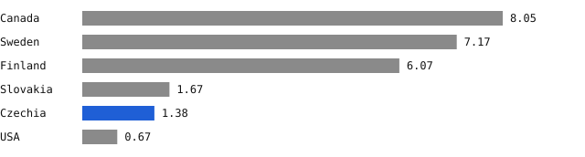
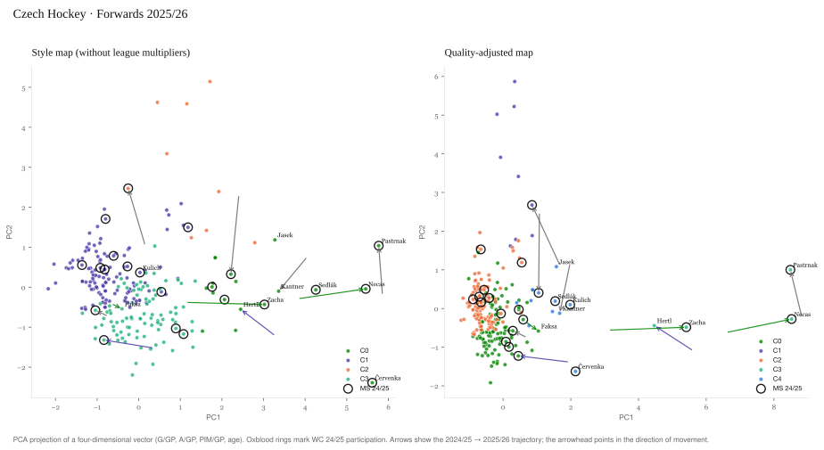
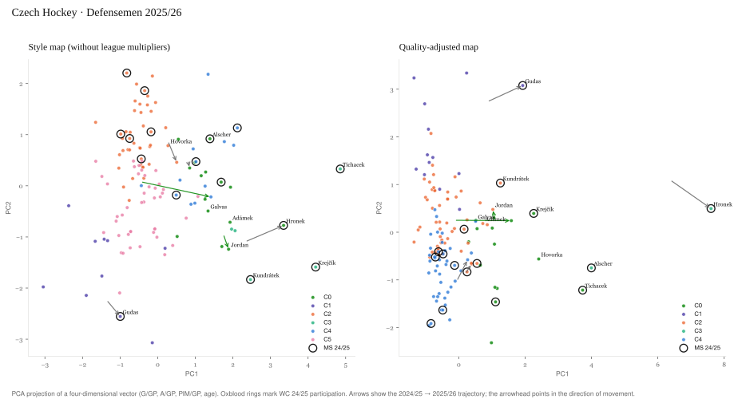

Tool · Player Pool Atlas · Czech ice hockey players, 2024/25–2025/26
Player Pool Atlas, hockey: the Czech player pool against five countries
A descriptive atlas of Czech professional hockey players in the NHL, Liiga and Extraliga, which counts NHL players per head against five countries and finds Czechia fifth of six, thinnest among young forwards and defencemen.
- NHL players per million Czechs, 2025/26
- 1.38 15 players · fifth of six · administrative count
- Czech NHL forwards aged 18–21
- 1 FIN 3 · SWE 7 · administrative count
- Czech NHL defencemen, all ages
- 3 FIN 9 · SWE 30 · none aged 18–21 · administrative count
- mapped pool
- 385 NHL · Liiga · Extraliga · 2024/25 → 2025/26 · 78 confirmed Czech-eligible
Overwhelmed? Here's the short version
- The atlas is a public build that places every player in the pool on two maps of playing profile, one with and one without an adjustment for league strength, and overlays the national-team cycle; this page documents its method and the Czech numbers.
- Finland has roughly four times the Czech density of NHL players and Sweden five times. The Czech forwards aged 26–29 score more points per game than any other cell in the cohort tables, but there are four of them.
- The counts cover one season and many cells hold one or two players, so a single trade or injury moves them. The league-strength factors are approximations, and only two of them were stress-tested.
- The atlas describes where the pool is thin. It does not say why, predicts nothing, recommends no roster and leaves out the KHL and every team's internal data.
Photo: U.S. Air Force Academy · public domain, colour held
_during_game_against_Bentley_Falcons_men%27s_ice_hockey_at_Cadet_Arena_in_Colorado_Springs_on_November_9,_2018_(45170233234).jpg){kind=link}
What the atlas does and comparable work
The atlas asks where the Czech professional pool is thin compared with Finland, Sweden, Slovakia, Canada and the USA, by position and age, and what the players in it look like as producers. Counts of NHL players by birthplace are published routinely, for example on Hockey-Reference1, and league-equivalence factors that translate scoring between leagues go back at least to Desjardins2. The atlas adds a per-head count split by position and age against named peers, and a map of every player in the NHL, Liiga and Extraliga pool in one reproducible build, published at hockey.bsandova.com3.
Method
The per-head count takes every player born in a country (birthCountry in the NHL Stats API) who played at least ten NHL games in 2025/26 by MoneyPuck's totals, and divides by population45. The populations (Czechia 10.9 million) are rounded figures for about 2024 written into the code with no source recorded. Age cohorts use the age a player reaches in 2025, 2025 minus birth year: 18–21 (labelled U22), 22–25, 26–29 and 30 or older.
The mapped pool of 385 players combines three routes. NHL players count as Czech when born in Czechia, the same rule as the per-head count, so Czech players born abroad are missed in both. Liiga players count by the league's nationality field. Extraliga players enter the pool by league, because hokej.cz does not publish birth country; they are marked Czech-eligible only when they match a Czech IIHF roster, so the pool includes imports. In all, 78 players are confirmed eligible3678.
Every player is a four-dimensional vector of goals, assists and penalty minutes per game and age, projected with PCA and clustered with K-means, with the number of clusters chosen by silhouette score from 4–8 for forwards and 3–6 for defencemen. The silhouette values are not reported, and because age is one of the four features, the clusters mix playing profile with career stage. Per-game rates for players with few games are shrunk towards the league median with a fixed prior of \(K = 10\) games, not estimated from the data:
At one game the median carries about 91 % of the weight and at eighty games the player's own record about 89 %; a player with five points in four games, 1.25 raw, drops to 0.59. The quality map multiplies each rate by a league factor, NHL 1.00, AHL 0.55, SHL 0.45, Liiga 0.42, NL 0.40, Extraliga 0.35 and first league 0.20, set by hand with public NHL-equivalency work as a guide29.
Worked example: Czechia in 2025/26
Fifteen Czech-born players meet the rule, 1.38 per million, fifth of six. The USA has the most NHL players in absolute terms and 335 million people to divide them by, the figure in the code. Slovakia, with half the Czech population, ranks above Czechia3.

Split by position and age, each cell gives the number of players with at least ten games and their median points per game. A median in a cell of one or two players is those players' own value and is not comparable across cells.
| cohort | CZE | FIN | SWE | SVK |
|---|---|---|---|---|
| U22 (18–21) | 1 · 0.42 | 3 · 0.24 | 7 · 0.45 | 4 · 0.33 |
| 22–25 | 2 · 0.22 | 9 · 0.24 | 13 · 0.32 | — |
| 26–29 | 4 · 1.06 | 8 · 0.46 | 11 · 0.40 | 2 · 0.28 |
| 30+ | 5 · 0.19 | 5 · 0.47 | 15 · 0.58 | — |
| cohort | CZE | FIN | SWE | SVK |
|---|---|---|---|---|
| U22 (18–21) | — | — | 5 · 0.23 | 1 · 0.38 |
| 22–25 | 1 · 0.00 | 1 · 0.27 | 12 · 0.24 | — |
| 26–29 | 1 · 0.60 | 5 · 0.18 | 5 · 0.23 | 2 · 0.26 |
| 30+ | 1 · 0.23 | 3 · 0.35 | 8 · 0.49 | — |
The youngest Czech forward cohort is one player, Kulich, against three for Finland and seven for Sweden. The 26–29 cohort of four, among them Pastrňák, Nečas and Zacha, has a median of 1.06 points per game, the highest in these tables. On defence Czechia has three NHL players in all, against nine for Finland and thirty for Sweden, and none aged 18–21. The fifteen players are the twelve forwards and three defencemen in these tables3.
The two maps show the league adjustment openly. In the style map, on raw rates, Pastrňák and Červenka sit in the same production zone, because each produces alike in his own league; in the quality map Pastrňák moves to PC1 ≈ 8.5 and Červenka to about 2. Of the 81 players who played the 2024 or 2025 World Championship for Czechia, 42 are in the mapped pool, from both the NHL and the Extraliga3.


Tests and sensitivity
The repository holds 51 software unit tests, and every stochastic step uses seed 429. The Liiga and Extraliga factors were each moved by ±20 % and the quality ranking recomputed; the NHL is the reference at 1.00 and the other factors were not varied. Moving every factor by the same percentage cannot change a ranking, so those two scenarios are not shown. In the four scenarios below the top ten changes by at most one player and the four NHL forwards at the top stay there, but the mean rank shift in the top twenty reaches 4.35 places when the Liiga factor falls, so the lower part of the ranking depends on the factors3.
| scenario | top-10 overlap | churn | mean Δ rank, top 20 |
|---|---|---|---|
| Liiga −20 % | 9 / 10 | 1 | 4.35 |
| Liiga +20 % | 9 / 10 | 1 | 1.90 |
| Extraliga −20 % | 9 / 10 | 1 | 1.30 |
| Extraliga +20 % | 10 / 10 | 0 | 2.50 |
Limits
Two analyses were dropped before publishing. An age curve for the Extraliga showed players improving into their thirties, because those still playing at 33 are the ones good enough to stay, so it measured survivorship. A youth-to-Extraliga conversion rate was right-censored: the older youth rosters had not been collected and the recent players had not had time to convert3.
The counts are one season of small numbers, and the 2024/25 counts, which the build fetched, are not shown here because the fetched data were not kept. Birth country misses Czech players born abroad in the NHL, and the Extraliga part of the pool includes imports. The KHL is left out for sanctions and data-access reasons, and the number of Czech players this removes was not measured. The population figures have no recorded source. The league factors are judgement, and the clusters have no reported validation. The atlas uses public data only, without the video, conditioning data and tracking that a national team's staff holds.
Install and reproduce
The pipeline is public under MIT and runs with make install && make all, and make test runs the tests9. The published numbers come from the render of 18 May 2026. The fetched data are not committed, so a rebuild fetches the current seasons and will give different numbers. The repository also holds a Neo4j player graph, a similarity search and LLM-drafted scouting briefs, described in its README. The live atlas, in English and Czech, is at hockey.bsandova.com.
References
- Hockey-Reference. NHL Player Birth Places. hockey-reference.com/friv/birthplaces.cgi. Accessed 29 September 2026.
- Desjardins, G. (n.d.). League Equivalencies. hockeyanalytics.com/Research_files/League_Equivalencies.pdf. Accessed 29 September 2026.
- Šandová, B. (2026). Czech Hockey · Player Pool Atlas, edition 01, render of 18 May 2026, English edition 12 September 2026: summary, cohort tables, methodology, sensitivity table, cluster archetypes, limitations. hockey.bsandova.com. Accessed 29 September 2026.
- NHL Stats API, api-web.nhle.com/v1: 2024/25 and 2025/26 rosters and player landing pages (
birthCountry, birth date, position). Fetched for the render of 18 May 2026. - MoneyPuck. Skater season totals, 2024/25 and 2025/26 (games played, points). moneypuck.com. Fetched for the render of 18 May 2026.
- Liiga. Season player statistics and nationality. liiga.fi. Fetched for the render of 18 May 2026.
- hokej.cz. Tipsport Extraliga player statistics and birth dates. hokej.cz. Fetched for the render of 18 May 2026.
- IIHF tournament rosters (World Championships 2024 and 2025, World Junior Championships 2024 and 2025) via Wikipedia. Fetched for the render of 18 May 2026.
- Šandová, B. (2026). czehockey-player-pool-atlas, v0.1.0. Software, github.com/sandovabarbora/czehockey-player-pool-atlas, commit
3fec8b3, MIT: pipeline, league factors, shrinkage, clustering, sensitivity, population constants insrc/international_benchmark.py.
Change log
- 14 September 2026: first published as "Who Czech hockey produces, per capita".
- 29 September 2026, version 2: reframed as a tool page and retitled. Correction: the facts, the short version and the text gave four Czech NHL defencemen and fourteen Finnish ones; the cohort tables, which the build computes, give three and nine, and the per-head counts (15 for Czechia, 34 for Finland) match the tables, so the text now says three and nine. Correction: the per-head count was described as every Czech-born player on an NHL roster; it counts those with at least ten games. Correction: the cohort labelled 23–25 covers ages 22–25 (age reached in 2025), and is relabelled; the U22 row covers 18–21. Hertl, born 1993, falls in the 30+ cohort and is no longer named in the 26–29 cohort. Correction: the sensitivity test perturbed only the Liiga and Extraliga factors, not each factor; the claim that the map is not sensitive to them was removed, and the two uniform-scaling rows (all −20 %, all +20 %, which cannot change a ranking) and the baseline row were dropped from the table. The shrinkage is called a fixed prior, not empirical Bayes. The pool is described by its actual eligibility rules (78 players confirmed eligible) instead of "385 players with Czech eligibility". Added comparable work, the population caveat, the note that the fetched data are not committed, silhouette and age caveats for the clusters, and a caveat on medians in cells of one or two players. Removed the claim that the per-head number had not been aggregated before, "world class", the cluster archetype counts (18, 122, 9 and 92 players, median birth years 1996 and 2001), and the section on the knowledge graph, similarity search and scouting briefs (about 3 200 players, 1 177 analogs, about 570 duplicate nodes), which is reduced to one sentence pointing to the README. References split to one work each, with access or fetch dates. The US population is given as 335 million, the figure the per-head count divides by, instead of 340 million.
- 29 September 2026: figures only, no sentence of the text or number changed. The per-head bars and the two atlases are interactive charts drawn from the atlas's data, with the static renders kept as fallbacks; the bars became fig. 1, so the forwards are now fig. 2 and the defencemen fig. 3. Tables and figures sit in the text column. The maps draw every point in the held blue and give the K-means cluster in the tooltip and a table, because the published map data carry no league for a rung colour; the movement arrows are drawn as lines.
- Checked against editorial standard v1 on 29 September 2026.